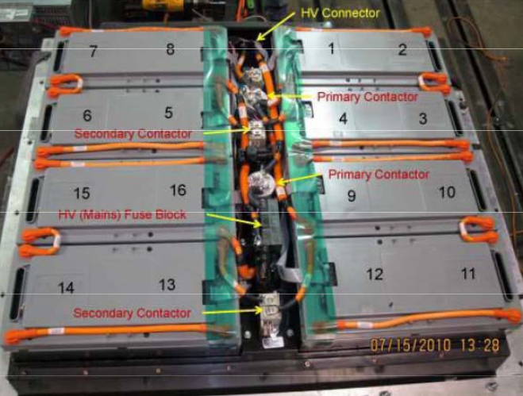
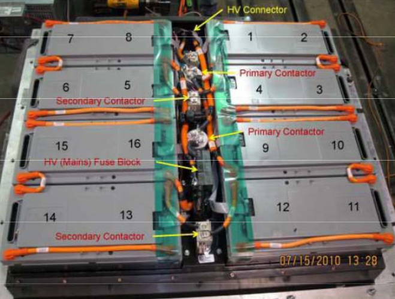
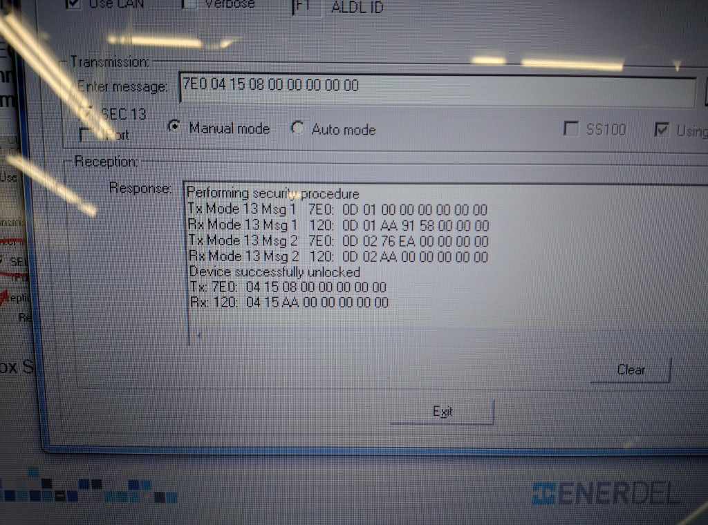
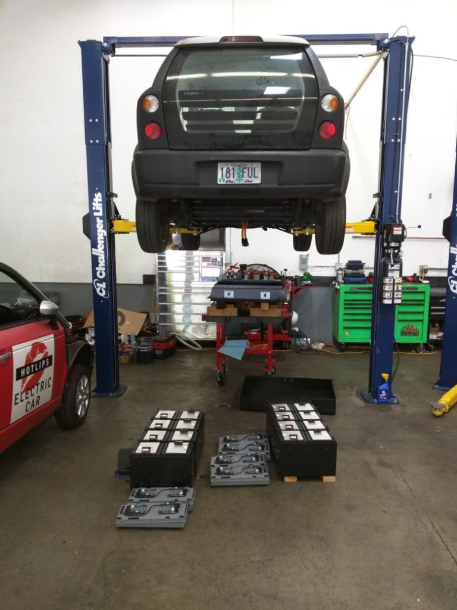

If you have the misfortune of needing to replace an RLEC, you will get the RLECs ID from the diagnostic software. But you have to know where that ID is physically located in the pack. Here is a photo with all of the RLECs/modules labeled:

Think City EV
If you have the misfortune of needing to replace an RLEC, you will get the RLECs ID from the diagnostic software. But you have to know where that ID is physically located in the pack. Here is a photo with all of the RLECs/modules labeled:

Here is the response from Enerdel:
From: Battery Support <support@enerdel.com>
Date: Fri, Jun 17, 2016 at 7:22 AM
Subject: Inquiring on Think City Car
To: “john.mayer@greendropgarage.com” <john.mayer@greendropgarage.com>
Thank you for Inquiry.
We are sorry for your inconvenience, however, we no longer provide
replacement parts for the Think City Car.
Continue reading Trying to get in touch with Enerdel; UPDATE: Disappointing Success
I have Enerdel’s ProgTool (specifically Programming Tool V4.16), which when configured properly I simply need to transmit a single message to the RLEC to set a new slave index/ID:
(For a description of the hardware required to connect to the RLEC, go to this post. You’ll need the PCAN adapter and the modified 4-wire RLEC wire harness.)
Enter message:
7E0 04 15 0X 00 00 00 00 00
Where X is the RLEC location ID ( 0-15 )
represented in hex ( 0-F )
But the ProgTool actually sends and receives a few messages (some kind of unlock procedure) before transmitting that message. Here’s a screen shot:

In the first sentence I glossed over the details of configuring the settings. Here’s what you need to do before you type in the transmission message:
Now replace the text in the “Enter message: ” text box with the message described above and click “Send.”
Now, when you install it into the pack make sure you put it in the correct position. Even Enerdel’s CommTool has inconsistent ways of referring to RLECs. Is the data that you’re looking at referring to the RLECs position in that pack by natural numbering (e.g. the first RLEC is number 1), or is it referring to the RLEC by its ID which is numbered in the way that is more conventional to computer programming (e.g. the first number is zero (aka 0, aka 0x0). It’s almost like they’re trying to trick you, so stay on your toes. Also it helps to know how they’re laid out in the pack.
Good luck!
It’s not the first time that we’ve seen this, but it’s probably the worst. The symptom of the car was that it would not start or charge, and one of the RLECs was reporting no cell voltage data. I had an RLEC on hand and programmed with the slave ID to replace the one that was not reporting data, but then I found this:
 Continue reading Water in the traction battery
I’m not surprised anymore when a Think arrives at the shop and the rear liftgate is released. Often the latch position switch (that should turn on the “Door Ajar” light on the center console) is not adjusted correctly. And I’ve seen plenty of liftgate latches slowly get further and further out of adjustment until you really have to slam it to get it to shut. So here’s what you can do about it: Continue reading That Pesky Rear Liftgate Latch…
It has finally arrived! Or at least it is finally ready to be delivered!
The Think Traveling Diagnostic Kit is on its maiden voyage to southern California as of December 24, 2015. It will cost $150 per week plus shipping to rent the kit. Continue reading The Traveling Diagnostic Kit
CommTool is Enerdel’s proprietary software for communicating with the traction battery.
Think’s TechCentre diagnostic software will retrieve diagnostic trouble codes and display them in a format that is much easier to interpret than CommTool. However, TechCentre’s interface will tell you that you can clear those battery DTCs; then it will tell you that the codes cleared but that they already reset, but that’s a big fat lie!
And that is the Number One reason that CommTool is essential for Think Technicians: Some DTCs that are set by the battery are stored in non-voltile memory (which means they can’t be cleared just by disconnecting the 12V battery) and will inhibit any further battery operation until they are cleared.
Continue reading Using CommTool
There have been several revisions to the program running in the Think Power Conversion Unit (PCU). Most of these changes fixed bugs or accommodated the retrofit to a PTC heater. In this post I might throw around various terms that all essentially mean the same thing: firmware/software, release/version, update/flash/re-flash.
The latest firmware release changed the driving characteristics of the car quite significantly. Continue reading Updating PCU firmware
The headliners, that is, the interior roof linings of Thinks have been know to sag. I am thrillingly close to having a retrofit designed to fix this defect properly. Some of my previous attempts at reinforcing the headliner failed in precisely the same was as they did without the reinforcement. Once I verify that my new design is reliable, my boss and I will decide how much it will cost to do the retrofit and publish that cost. I’ll also publish the design and instructions for doing the retrofit yourself if you are so inclined or you can try to get someone else to do it for you. This post will be the first and last parts of the instructions: removing and re-installing the headliner.
This one beat me up pretty bad before I figured it out:
In the wire harness that connects the EVSE charge port to the PCU there are crimped barrel splices. I found one of these splices to be an intermittently open circuit.
Continue reading A new suspect in the case of failed chargers!
{kind=link}